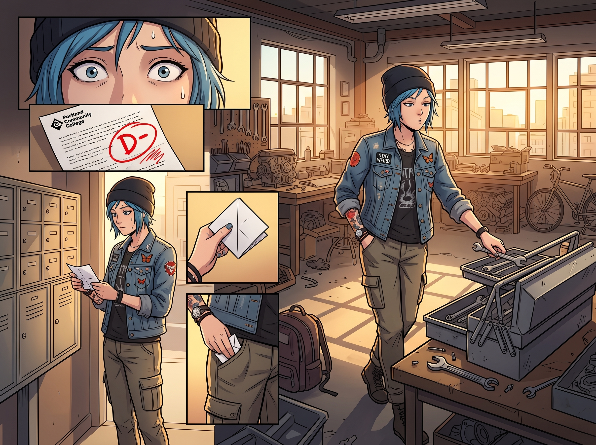

特種補考衝刺集中營

週二下午，波特蘭社區學院的期末成績單寄到了 Loft。
在《應用材料力學與工程圖學》那一欄，赫然印著一個血紅刺眼的「D-（未通過，需於下週一參加二次重修補考）」。
Chloe 站在信箱前，飛快地把那張信紙折成四折，塞進工裝褲最深的口袋裡，臉上維持著若無其事的表情，慢悠悠地晃回車庫，假裝專心整理起工具箱。
殊不知，Victoria 早在半小時前，就已經從學校的線上教務系統裡看到了成績更新提醒——身為工坊的投資人兼法定合夥人，她的帳號本來就掛靠著財務與行政審計權限。
「Price，妳整理工具箱的手法，」Victoria 端著咖啡杯，不緊不慢地踱步走近，語氣裡帶著一絲看穿一切的悠然，「比妳藏成績單的手法還要生疏。」
Chloe 的動作猛地一頓：「妳、妳說什麼呢，老娘只是——」
「口袋鼓起來的形狀，」Victoria 用杯緣輕輕點了點 Chloe 的褲袋，唇角勾起一抹危險的弧度，「是一張對折兩次的 A4 紙。而且，妳從信箱走回來的路上，刻意繞了平時多走三十秒的遠路——典型的心虛路線。」
Chloe 臉色一僵，下意識想把手插進口袋護住那張紙，卻被 Victoria 眼疾手快地一把抽了出來，展開一看，那個刺眼的「D-」瞬間暴露無遺。
「如果妳以為工坊法人代表掛科被留級重修這件事能瞞過妳的投資人，」Victoria 慢條斯理地將成績單折好，收進自己的手袋，語氣裡帶著毫不留情的算計，「那妳對現代商業審計的理解顯然和妳的力學成績一樣——不及格。」
於是，一場比高中黑井時期更加嚴密、更高規格的「特種補考衝刺集中營」在 Loft 客廳長桌上以不可逆轉的態勢全面鋪開。
一、被夾擊的戰場
長桌中央擺著厚達八百頁的《材料力學精析》，Chloe 被牢牢按在正中央的木椅上，左邊是拿著秒錶與紅筆的 Victoria，右邊坐著 Max，對面是不時端上提神草本茶的 Kate，連通往天台的門都被反鎖了。
「別在那裡像隻脫水章魚一樣哀嚎，Price。」Victoria 用金色鋼筆重重敲了敲桌面上的應力應變圖，「再錯一題，扣除工坊下個月 20% 的改裝耗材預算。」
「因為老娘的大腦生來是用來握扳手的，不是用來算這個見鬼的慣性矩的！」Chloe 抓狂地揉著一頭凌亂的藍髮，趴在桌上發出悶哼，眼看又要故技重施把筆扔掉。
Kate 及時端來一盤切好的蜜瓜，聲音輕柔得宛如大天使降臨：「Chloe，把這題做完再休息好不好？不然今晚就沒有烤芝士蛋糕了呢。」
「靠……Marsh，妳這招比蔡斯扣預算狠毒一百倍。」Chloe 咬牙切齒地把鉛筆重新抓起來。
二、暗房思維破局公式
作為最了解 Chloe 腦迴路的人，Max 推了推黑框眼鏡，直接從工具箱裡搬來了那天修留聲機拆下來的黃銅小齒輪、一根實心鋁棒，還有一團她從暗房順來的軟橡皮泥。
「別看那些抽象符號，Chloe，看著這根金屬棒。」Max 將鋁棒架在兩塊橡木塊上，用手指按壓中段，鋁棒微微彎曲，「上面的纖維被壓縮，下面的纖維被拉伸，中間那一層完全不動——那就是妳死活記不住的中性軸。」
「操……」Chloe 盯著金屬棒的形變，眨了眨眼睛。
Max 又拿起那團橡皮泥，捏成一根短棒，用兩根手指同時從上下按壓：「妳看，這團泥巴受力後，上半部分明顯被壓扁變寬，下半部分被拉薄變細——這就是應力沿截面高度分佈不均勻的樣子。妳每次幫皮卡調校懸吊時，判斷彈簧鋼片哪一側先疲勞斷裂，靠的就是這個直覺，只是妳一直沒發現自己早就懂了。」
她再拿起那枚黃銅小齒輪，用指尖轉了轉：「至於這個慣性矩，妳可以想成——同樣是一根鋼條，做成實心圓棒，還是挖空做成齒輪這種空心截面，抗彎的能耐完全不一樣。空心結構把材料分佈得離中性軸更遠，反而更抗彎，這也是為什麼自行車車架都做成空心管，不做成實心鐵棍。」
「靠，」Chloe 猛地坐直了身子，眼睛亮了起來，「所以老娘車庫裡那些空心鋼管防滾架，比實心鐵棍還扛得住撞擊，就是這個道理？！」
「答對了，長官！」Max 笑著給她打了一個大大的紅勾，「妳的手感從來沒有錯過，只是缺一套翻譯成公式的字典而已。」
三、深夜的成果
凌晨一點半，客廳的燈光依然亮如白晝。
桌上堆滿了畫滿應力分析圖的草稿紙，Chloe 雖然眼圈泛黑、哈欠連天，但手裡的鉛筆已經能飛快地在座標紙上拉出筆直漂亮的彎矩曲線。
「最後一道懸臂梁載荷綜合題，」Victoria 看著計時器，端起黑咖啡抿了一口，眼神裡掠過一絲不易察覺的滿意，隨後優雅地敲了敲桌面，「做完這道題，允許妳睡四個小時。」
「遵命……冷血無情的監工大人……」Chloe 嘴裡含糊不清地嘟囔著，手底下卻啪啪作響地按著計算器，嘴角在無人注意的角度悄悄揚起了一抹踏實的弧度。
落地窗外，波特蘭的夏夜微風吹拂著天台的香草，而屋內這場熱鬧而溫暖的「深夜圍剿」，一如當年在阿卡迪亞灣的那些日子，只是這一次，身邊每一個人都在，誰也沒有落單。